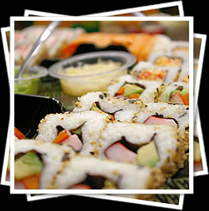

Welcome to Kassai sushi
Kassai means, to cheer or applaud in Japanese, and that is exactly what you will feel like doing after your dining experience at Kassai Sushi. In our time serving the Denver area we have built a solid reputation for providing some of the best Japanese cuisine, at very competitive prices. Kyle Wagner of the Denver Post writes, "Kassai is a colorful sushi bar that deserves kudos for their well crafted Sushi and Sashimi and its fresh, tidy cooked dishes." At Kassai Sushi our customers are treated to a unique dining experience.
You can enjoy a hand rolled Temaki wrapped in seaweed or try our Sushi and Sashimi for two, served to you in our own private boats (check out our video and you'll see what I mean
9News.Com Video). You can sit in our dining area or pull up a stool at our sushi bar and watch our expert chefs work their magic first hand. Either way you'll find a nice atmosphere, great food and excellent service. If you can't find time to dine in with us you can order take out and enjoy our delicious meals at home or at the office.
Kassai Sushi serves lunch and dinner 7 days a week for your dining pleasure. Our hours are 11 AM – 10:00 PM Monday through Saturday and 4:30 PM to 10PM on Sunday. Our menu features some of the finest Japanese dishes, specializing in sushi. We have several delicious appetizers to choose from and make sure you save room for dessert cause you won't be disappointed. Please, look over the menu and the other information provided in the site. We have a variety of dishes to choose from; so come down and enjoy our delicious food and our friendly staff, you'll be cheering and applauding on your way out.
If you would like to know more about please feel free to contact us.